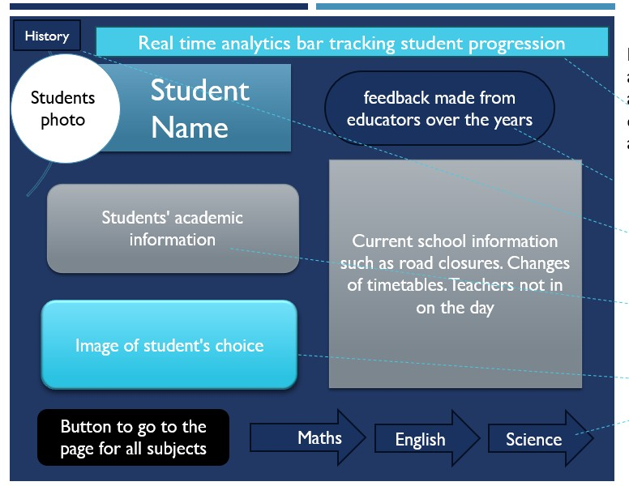

Caerdydd Dragon
A 2D puzzle platformer set in Cardiff Castle, built with a team of four. Designed for accessibility, playtested with 20 participants, and shaped by real player feedback at every stage.
View Project
Virtual Worlds Using the GPU
Real-time 3D environment built from scratch using custom GLSL shaders, texture atlas animation, and GPU memory optimisation — no engine, just code.
View Project
Computational Intelligence
Trained and compared neural network and Random Forest models for classification. Skills directly applicable to game AI, player behaviour analysis, and adaptive difficulty systems.
View Project
Gamification in Education Technology
Final year dissertation exploring how game design mechanics — reward loops, progression systems, and challenge-feedback cycles — improve learner engagement in EdTech contexts.
View Dissertation